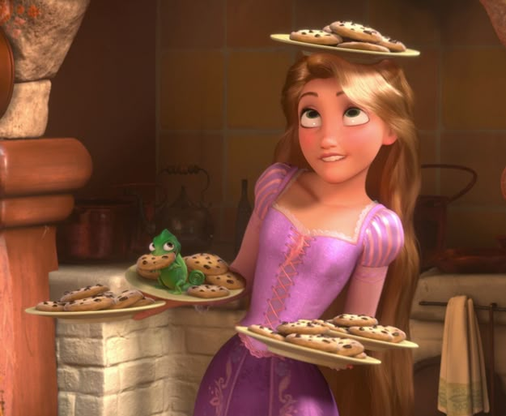

Croissants
Croissants are buttery pastries with delicate, flaky layers. They are made by folding butter into dough repeatedly.

The basics
Baking is a cooking method that uses dry heat, usually in an oven, to prepare food. It is commonly used to make bread, cakes, cookies, pastries, and many other delicious treats.
Baking involves combining ingredients in the correct amounts and following specific steps. Heat causes physical and chemical changes that help baked goods develop their texture, flavor, color, and structure.
For many people, baking is also a creative activity that allows them to experiment with flavors and share homemade food with others.
A world of delicious treats
Pastries come in different shapes, textures, and flavors. Here are some popular examples.
Croissants are buttery pastries with delicate, flaky layers. They are made by folding butter into dough repeatedly.

Cakes are sweet baked goods often made with flour, sugar, eggs, and fat. Cupcakes are small, individually portioned cakes.

Tarts have a pastry crust and an open top that can hold fruit, custard, chocolate, or other fillings.
The essentials
Every ingredient has a purpose. Understanding their roles is an important step toward becoming a better baker.
Flour provides structure to many baked goods. Wheat flour contains proteins that can form gluten when mixed with water.
Sugar adds sweetness and helps with browning. It can also affect the moisture and texture of baked goods.
Eggs help bind ingredients together and can contribute moisture, structure, color, and richness.
Butter adds flavor and richness. It can also contribute to tenderness and texture.
Milk adds moisture and contributes flavor, color, and texture to many baking recipes.
Baking powder is a leavening agent that releases gas and helps many cakes and muffins rise.
Ready, set, bake!
Holds ingredients while you combine them together.
Help you measure ingredients accurately and follow recipes correctly.
Helps combine ingredients and incorporate air into mixtures.
Holds cookies, pastries, and other items while they bake in the oven.
Little things make a difference
Read every step before starting so you can prepare your ingredients and tools.
Use the measurements specified in the recipe for more consistent results.
Preheat the oven and follow the recipe's temperature and baking instructions.
Explore more baking guides and recipes from BBC Good Food.
Explore Baking Resources ↗